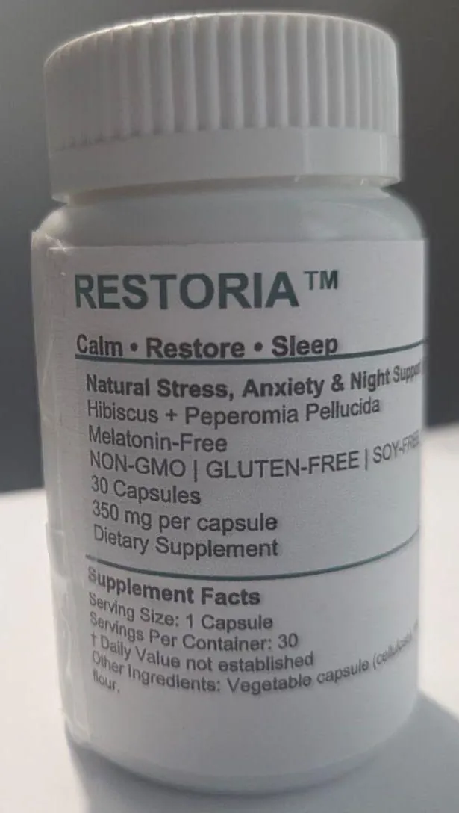

Restoria™
Quiet your mind at night
A plant-based nighttime formula, made to help the body shift from daily stress into deep, natural rest. No melatonin, no harsh sleep aids.

Rest is not a luxury
Modern life has made rest feel like a luxury instead of a necessity. Deadlines, work pressure, money worries and constant notifications. By night the body is tired, but the mind refuses to slow down.
Thoughts race. The body stays tense. Sleep comes late or stays shallow, and morning arrives with you as tired as the night before.
The body cannot restore itself without proper rest. Many sleep products force sleep with melatonin or sedatives. Restoria was made to support the body's own way of winding down instead.
What's inside
Each capsule holds 350 mg of two botanicals.
Hibiscus
A plant traditionally used to support relaxation and ease physical tension. Hibiscus contains natural antioxidants.
- Helps ease physical stress and tension
- Supports cardiovascular relaxation
- Contains antioxidants
Peperomia pellucida
A medicinal herb long used in traditional wellness systems to support calm, emotional balance and relaxation.
- Traditionally used to calm the nervous system
- Supports the body's natural relaxation response
- Helps the body move from activity to rest
Together, the two help the body prepare for sleep naturally, without relying on hormones like melatonin.
The story that inspired Restoria
A few years ago, a woman named Tola faced a problem that many people silently struggle with. Every night, the same pattern repeated itself. She would lie in bed exhausted after long days at work, yet her mind refused to switch off: thoughts about tomorrow, financial worries, endless mental conversations.
Hours passed before she could fall asleep. When she finally did, the sleep was light and restless. Morning became the hardest part of her day. She woke up irritable, mentally foggy and drained of energy. Her productivity dropped, her mood suffered, and even simple daily activities began to feel overwhelming.
Like many people searching for relief, Tola tried different herbal teas, supplements and sleep remedies. Some worked briefly. Many did nothing. Until she discovered a product from Adewura Natural Remedies called Restoria™.
Within weeks of using the botanical formula consistently, something changed. Her evenings became calmer. Her mind no longer raced endlessly. For the first time in years, she began to experience deep, natural rest again.
How her life changed
After solving her sleep and stress struggles, Tola was finally able to:
- Wake up with real energy. Instead of dragging through the morning, she started waking up clear-headed and refreshed.
- Focus better during the day. With proper rest, her concentration and productivity improved dramatically.
- Feel emotionally balanced. Her mood stabilized because her body was no longer under constant stress.
- Enjoy peaceful evenings. Rather than battling restless thoughts, she could relax and unwind naturally before bed.
- Restore her confidence. Better sleep brought back the mental clarity and calm she had been missing for years.
Anyone experiencing the same nightly struggles can experience the same transformation. There is no reason to struggle in silence when a natural solution exists.
A clean, simple formula
Restoria is made to fit a clean wellness routine: melatonin-free, non-GMO, gluten-free, soy-free and plant-based.
Shipping is $8 on orders under $100, and free on orders of $100 and above.
30-day satisfaction guarantee. If you are not completely satisfied, contact us within 30 days for a full refund.
This offer is only available for a limited time. So act fast and secure a bottle of Restoria™ today.
Say goodbye to your skepticism and doubt: Restoria™ is different
We know you've seen a lot of "pie in the sky" herbal teas, supplements and sleep remedies, but this is real. You may have tried similar products in the past and been disappointed, but Restoria™ is different. Our formula is backed by science and has been tested and proven to be effective.
Don't let past failures hold you back from experiencing the life-changing benefits of Restoria™.
These statements have not been evaluated by the Food and Drug Administration. These products are not intended to diagnose, treat, cure, or prevent any disease.